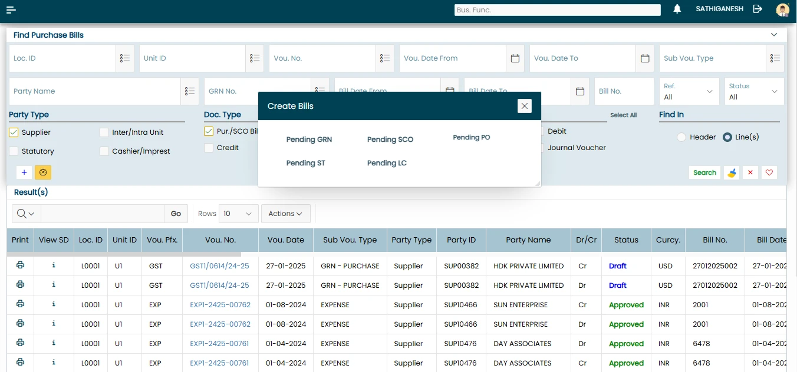
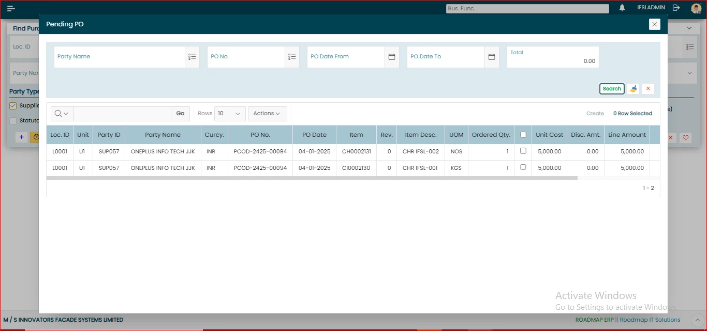
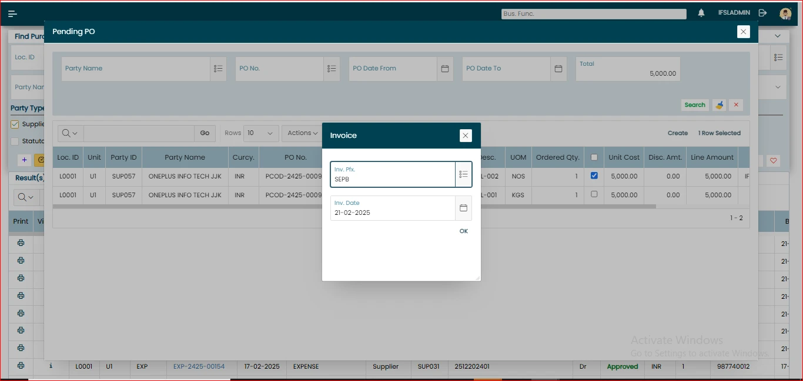
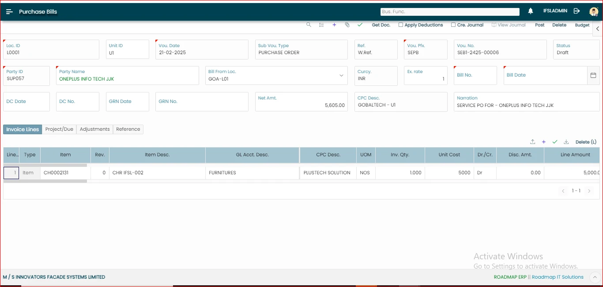

<div data-category="Financials" data-title="Purchase Order (With reference)" data-updated="December 01, 2025" data-contributors="RoadmapIT" data-breadcrumb="Home,Financials,Purchase Order (With reference)">
  <div class="page-content">
    <p>For the service PO, we could not receive the GRN, In this case we can use this matching type to register the Bill with Purchase order reference.</p>
    <p>This screen is to view the Purchase bill for the Purchase order type.</p>
    <p>This screen used to list out the Landed Cost Bills.</p>
    <h5>Navigation path:</h5>
    <p class="fs-6">Financials \ Transactions \ Party Document\Purchase Bills</p>
    <ul style="list-style-type: none; align-content: center">
      <li class="mouse-icon">By Clicking Pending Bills button, we can create the party document from Pending PO.</li>
    </ul>
    
    <ul style="list-style-type: none; align-content: center">
      <li class="mouse-icon">Click on Pending PO button.</li>
    </ul>
    
    <ul style="list-style-type: none; align-content: center">
      <li class="mouse-icon">search the Record by using the PO No. and Records based on date.</li>
      <li class="mouse-icon">Select the checkbox and click Create.</li>
    </ul>
    
    <ul style="list-style-type: none; align-content: center">
      <li class="mouse-icon">Select the Inv.Pfx and Inv Date.</li>
      <li class="mouse-icon">Click Ok.</li>
    </ul>
    
    <ul style="list-style-type: none; align-content: center">
      <li class="mouse-icon">Invoice created from pending PO will be displayed in this screen with the Matching Purchase order.</li>
      <li class="mouse-icon">Get Doc. button is used to fetch a similar document lines from Purchase order.</li>
      <li class="mouse-icon">click on Create Journal button to create the journal for the entry., and the deductions will be updated automatically, accordingly the box will be enabled.</li>
      <li class="mouse-icon">Click on create journal to view the journal/directly click post button, journal is created automatically and it will be posted.</li>
      <li class="mouse-icon">According to the HSN code, the GST % will be fetched automatically.</li>
      <li class="mouse-icon">If TDS Applicable checkbox is selected, then based on the TDS u/s the deduction will be applied.</li>
    </ul>
  </div>
</div>
